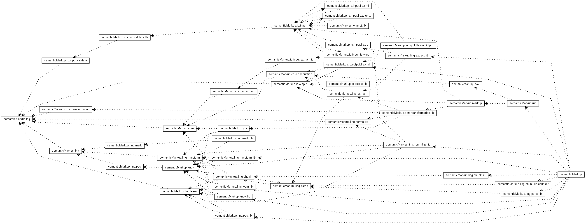

JavaScript is disabled on your browser.
Overview
Package
Class
Tree
Deprecated
Index
Help
Prev
Next
Frames
No Frames
All Classes

Packages
Package
Description
semanticMarkup
semanticMarkup.core
semanticMarkup.core.description
semanticMarkup.core.transformation
semanticMarkup.core.transformation.lib
semanticMarkup.eval
semanticMarkup.gui
semanticMarkup.io.input
semanticMarkup.io.input.extract
semanticMarkup.io.input.extract.lib
semanticMarkup.io.input.lib
semanticMarkup.io.input.lib.db
semanticMarkup.io.input.lib.taxonx
semanticMarkup.io.input.lib.word
semanticMarkup.io.input.lib.xml
semanticMarkup.io.input.lib.xmlOutput
semanticMarkup.io.input.validate
semanticMarkup.io.input.validate.lib
semanticMarkup.io.output
semanticMarkup.io.output.lib
semanticMarkup.io.output.lib.xml
semanticMarkup.know
semanticMarkup.know.lib
semanticMarkup.ling
semanticMarkup.ling.chunk
semanticMarkup.ling.chunk.lib
semanticMarkup.ling.chunk.lib.chunker
semanticMarkup.ling.extract
semanticMarkup.ling.extract.lib
semanticMarkup.ling.learn
semanticMarkup.ling.learn.lib
semanticMarkup.ling.mark
semanticMarkup.ling.mark.lib
semanticMarkup.ling.normalize
semanticMarkup.ling.normalize.lib
semanticMarkup.ling.parse
semanticMarkup.ling.parse.lib
semanticMarkup.ling.pos
semanticMarkup.ling.pos.lib
semanticMarkup.ling.transform
semanticMarkup.ling.transform.lib
semanticMarkup.log
semanticMarkup.markup
semanticMarkup.run
Overview
Package
Class
Tree
Deprecated
Index
Help
Prev
Next
Frames
No Frames
All Classes